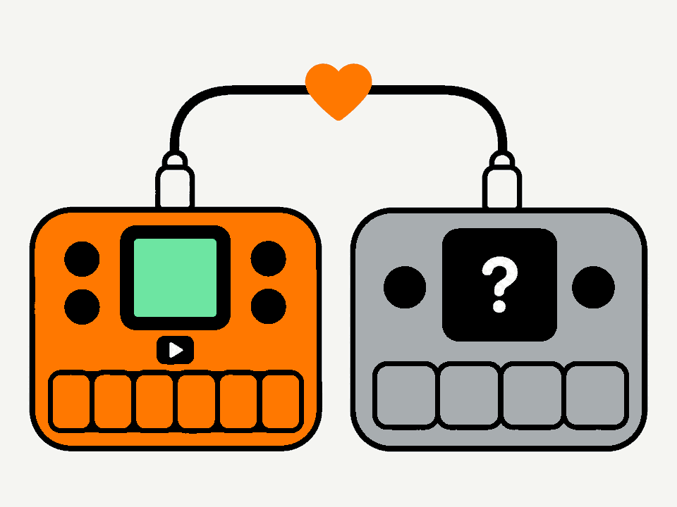
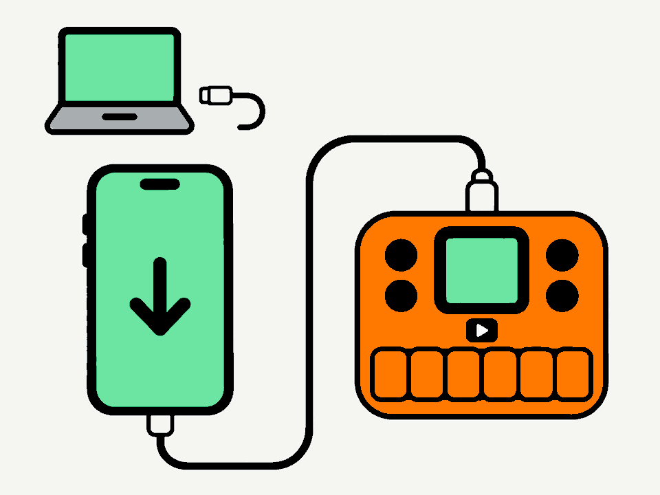
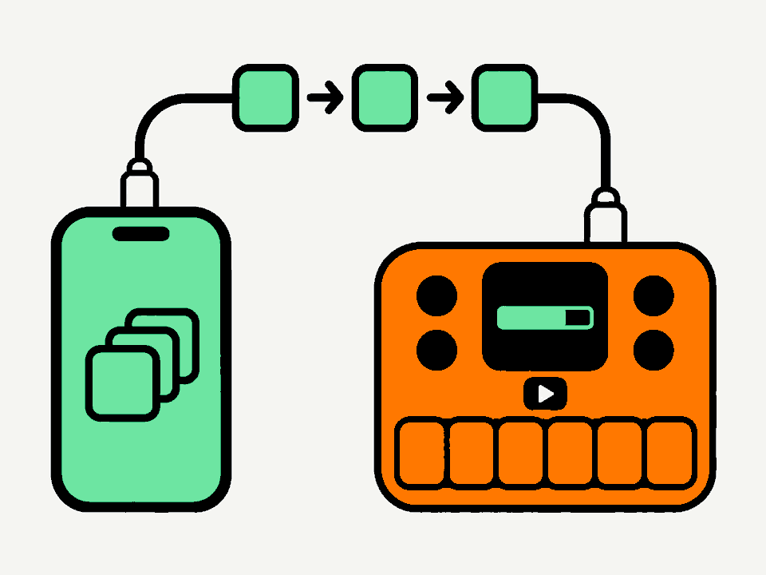
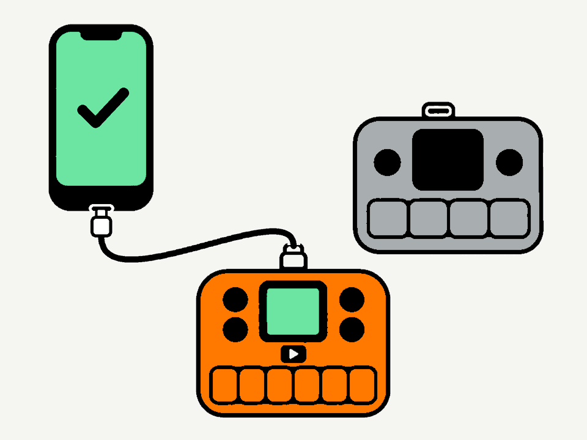
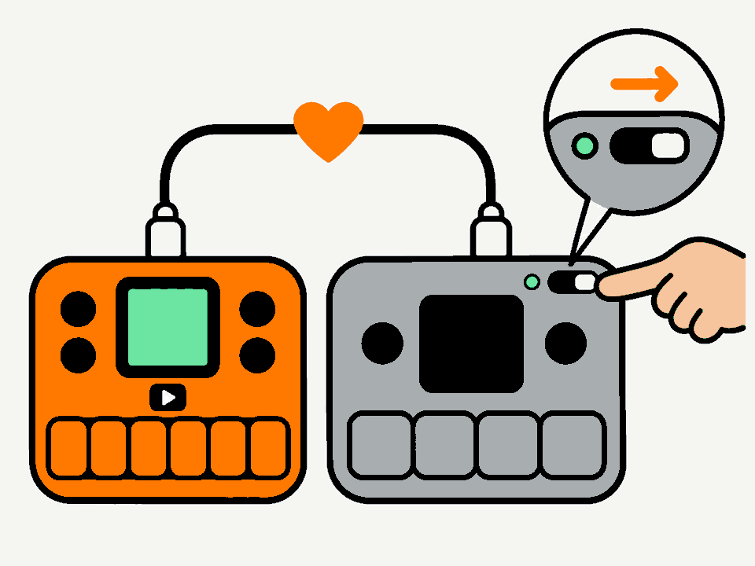
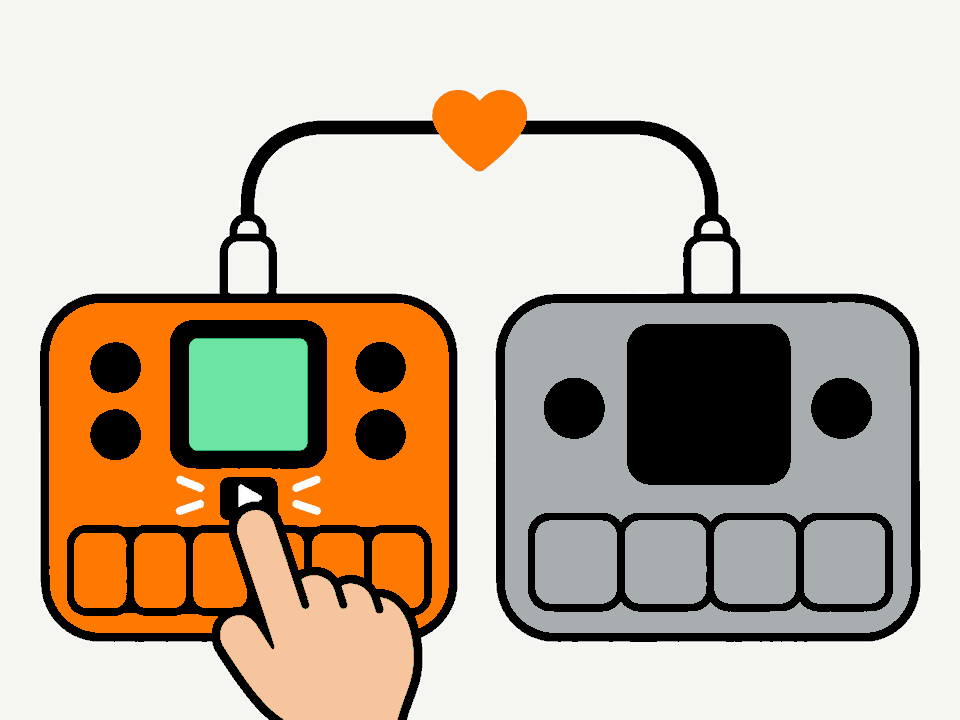
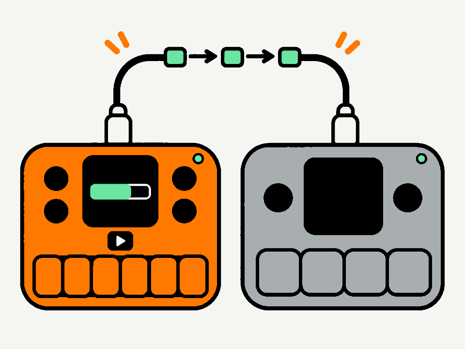
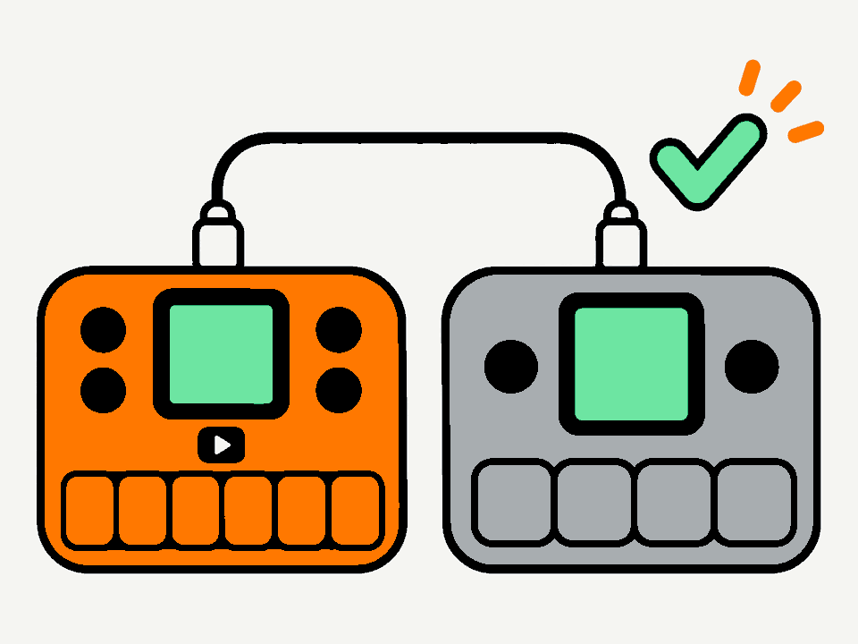
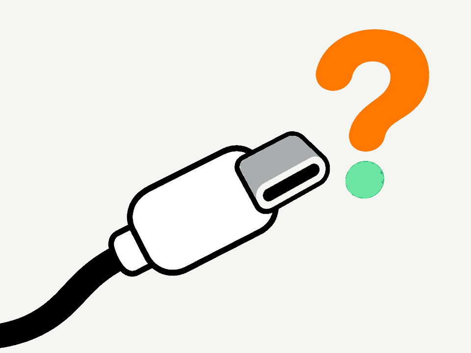

A unit that won't start?
If an FM-1 or SMK-37 shows nothing, or is stuck after a failed install, another working one can repair it. The working one runs a small program, M-Unbricker, from its memory: nothing is installed on it, and it goes back to its own firmware afterwards.
You need
- a working FM-1 or SMK-37 (most firmwares), charged
- the broken FM-1 or SMK-37, charged
- one USB-C data cable that fits both units and this phone or computer
- Chrome or Edge on a computer, Chrome on Android, or the MIDIWeb app on an iPhone or iPad (Safari can't talk to MIDI devices)
It also works the other way round: an SMK-37 can repair an FM-1.

Plug in the working unit
Connect the working unit to this phone or computer with the USB-C cable, and switch it on. Close M-UPGRADE, editors and music apps first.
The browser will ask to use MIDI devices: allow it.

Starting M-Unbricker
Found your unit.

Now follow its screen
M-Unbricker is running on the working unit. From here, its screen guides you, one step at a time: press PLAY to go on. You can put this page away.
In short: unplug the cable from this phone or computer, plug it into the broken unit while it's switched off, switch it on, and press PLAY to repair.
Step by step, in more detail
1. Move the cable
Press PLAY on the working unit. Unplug the cable from this phone or computer and leave it in the working unit. Plug the other end into the broken unit, and keep that one switched off for now.

2. Switch the broken unit on
When the working unit says Switch it on, switch the broken unit on. The working unit wakes it up and connects: Waking it up, Connecting, then Found an FM-1 or Found an SMK-37 while it checks.
If it says Switch it off first or No answer: switch the broken unit off, check the cable in both, and press PLAY to try again.

3. Press PLAY to repair
At Ready to repair, press PLAY. The broken unit gets a fresh bootloader (m-bootloader), and its old firmware and settings are erased. On an SMK-37 its calibration is kept. To stop without changing anything, press OCT− instead.

4. Keep both on
While it says Repairing, keep both units switched on and connected. It takes under a minute.

5. Done
At Done! the repaired unit restarts into MIDI mode: its screen says there is no firmware, and it waits for one. Press PLAY on the working unit to send it back to its own firmware.
Plug the repaired unit into your phone or computer and install a firmware with that firmware's own installer. Leave the unit's keys alone meanwhile: a key press leaves MIDI mode for the recovery menu, where MIDI MODE takes you back. That menu is also there later: hold PLAY (SEQ PLAY on the SMK-37) while switching it on.
Something not working?

- No unit found
- Use a data cable (some only charge), plug the unit in directly (no hub), switch it on and wait a few seconds. Use Chrome or Edge, and allow MIDI when asked. On an iPhone or iPad, open this page in the MIDIWeb app: Safari can't reach MIDI devices.
- The firmware didn't accept the helper
-
The helper has started on units running these firmwares:
FM-1
- M-VAVE stock V15 and V16
- Baud Girl FM-1+VA 102
- SLOOP 2.8.5
- JIANT FM 10.7.17
- Skiff 2.5.1
- Felucca 1.8.2 beta
- Melodee 1.6.1
SMK-37
- M-VAVE stock V16
- Baud Girl SMK-37+VA 102
- Erik37 1.2
- Snoop37 2.7.2
- Melodee 1.4.5
If the working unit runs another firmware and the helper doesn't start, install one of these for its model first, then try again. If it has m-bootloader, you can also hold PLAY (SEQ PLAY) while switching it on, choose MIDI MODE, and press Connect again. Otherwise, try another working unit, or use M-Flasher on a computer.
- The working unit says No answer
- Check the cable in both units, switch the broken one off, press PLAY to try again, then switch it on. A cable that worked with the phone works here too.
- It stopped while repairing
- Nothing is lost: switch the broken unit off, and press PLAY on the working unit to run it again.
- The installer doesn't find the repaired unit
- The unit has to show MIDI MODE; if it shows the menu, choose MIDI MODE. It appears as FM-1 Update or SMK-37 Update. Baud Girl's installer needs a firmware already running on the unit: install another one first, then Baud Girl.
- Start over
- Switch the working unit off and on: it goes back to its own firmware. Then reload this page.
Support
M-Unbricker is free, like M-Flasher and m-bootloader. If it brought your unit back, a donation helps pay for code signing certificates, so the M-Flasher apps can start without security warnings: Apple's developer program alone costs $99 every year.